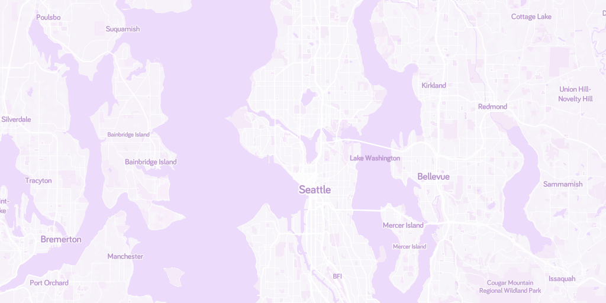

This html file makes the following query to the server:
{ullat: 47.754097979680026, ullon: -122.6953125, lrlat: 47.51720069783939, lrlon: -121.9921875, depth: 1}The expected raster result is:
{ullat: 47.754097979680026, ullon: -122.6953125, lrlat: 47.51720069783939, lrlon: -121.9921875, success: true}The image output of your program is shown below (will be blank if your server isn't running or working properly):
The correct output should be:
If your image looks different (or is blank), your implementation is not correct.